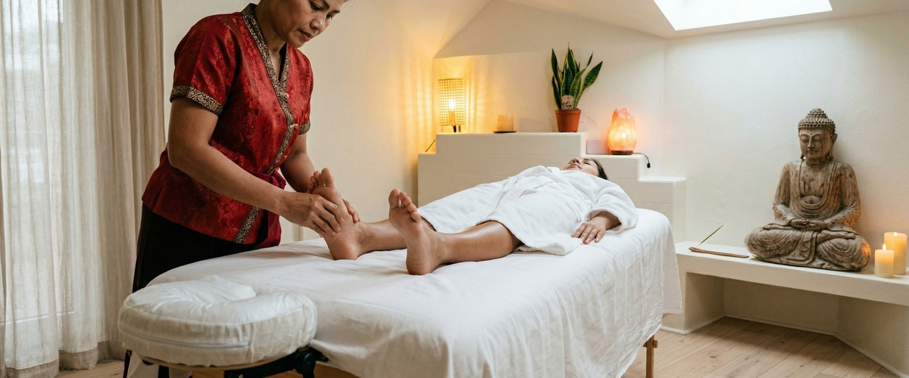
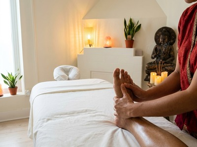
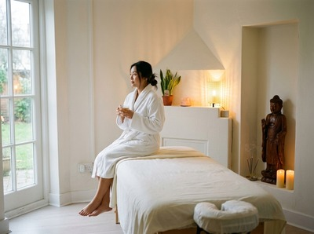

If your feet ache by midday, your legs feel heavy by evening, or you carry the tension of a full week in your lower body, Thai foot massage in Glasgow at Serendipity Massage Therapy & Wellness offers targeted, therapeutic relief that goes well beyond a simple foot rub.

Thai foot massage is a traditional treatment rooted in reflexology. It uses acupressure along sen energy lines and pressure-point work through the feet and lower legs. The principle is that specific points on the soles and arches connect to organs and systems throughout the body.
Your therapist uses their hands, thumbs, and a wooden massage stick to apply precise pressure. They work through the soles, arches, and heels, then up into the calves and ankles. The result is a treatment that is both deeply calming and physically restorative.

Sessions at Serendipity combine traditional Thai technique with a solid knowledge of anatomy and circulation. Each treatment is shaped around what your body needs on the day.
Thai foot massage suits anyone who spends long hours on their feet. That includes retail workers, healthcare staff, teachers, and people who commute across Glasgow on foot.
It works just as well for office workers whose circulation suffers from long periods of sitting. Runners and gym-goers carrying lower-leg fatigue will benefit too, as will anyone dealing with ongoing foot pain or ankle stiffness.
Sessions run from 30 to 60 minutes. You stay fully clothed throughout, so wear something loose that can be rolled up above the knee.
Your therapist will start at the soles and arches, then move to the ankles, calves, and lower legs. They use a mix of thumb pressure, kneading, and guided movement.
Afterwards, most clients describe a sense of lightness through the legs and a noticeably calm, grounded feeling. You can book your Thai foot massage online and arrive ready to switch off for a while. We are located at Central Chambers on Hope Street, a short walk from Buchanan Street and St Enoch subway stations.

At Serendipity Massage Therapy & Wellness, every therapist is trained to the same professional standard. The techniques come from head therapist Jariya Malone, drawing on the traditional Thai massage tradition.
Whether you are booking for the first time or returning as a regular, the quality and focus of your treatment stays consistent. Book your session and experience the difference a skilled, unhurried approach makes.
No. You stay fully clothed throughout the session. We do ask that you wear loose, comfortable clothing that can be raised easily above the knee, as the treatment works on your feet, ankles, and lower legs.
Sessions run from 30 to 60 minutes depending on the option you choose. A 60-minute session gives your therapist time to work thoroughly through the soles, arches, heels, ankles, and calves. A 30-minute session is a good introduction or a useful add-on to another treatment.
Most clients leave feeling lighter through the legs and calmer overall. The mix of pressure-point work and circulation support often brings a deep sense of ease that can help you sleep better that night. Some people feel briefly tired after their first session. This passes quickly.
The two share common ground: both use pressure points on the feet that connect to other parts of the body. Thai foot massage builds on those principles and adds acupressure along sen energy lines, joint movement, and stretching of the feet and lower legs. This makes it a broader physical treatment as well as a deeply relaxing one.
For general wellbeing and stress relief, once or twice a month works well for most people. If you are dealing with ongoing lower-leg fatigue, poor circulation, or broken sleep, more frequent sessions in the short term can help. Your therapist at Serendipity can advise on what suits your situation.
Please tell us about any injuries, conditions such as plantar fasciitis, or areas of acute pain when you book or on arrival. Our therapists will adjust the treatment to suit you. Thai foot massage is gentle enough for most people, but we will always put your comfort first and adapt the pressure as needed.